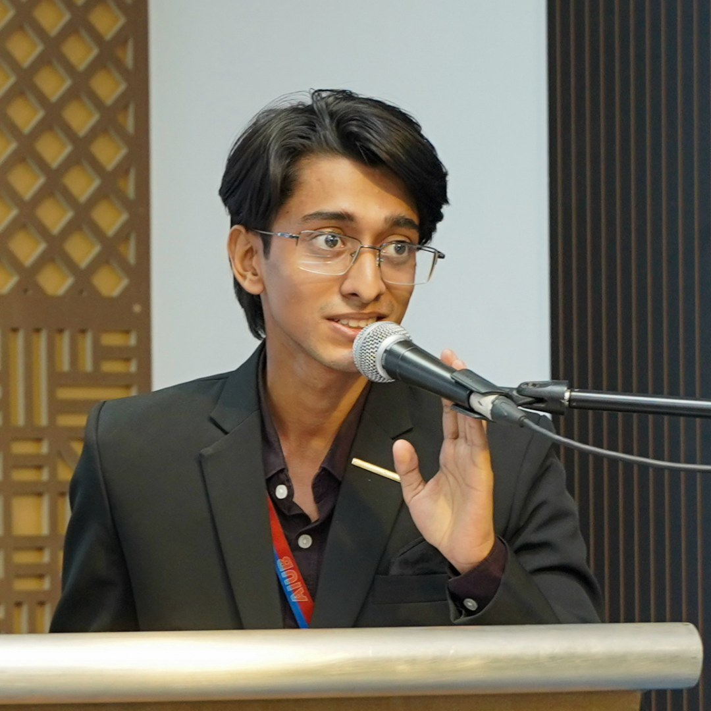

MD SHAHRIAR
SHISHIR SAMI
Economics undergraduate at American International University-Bangladesh (AIUB) with practical experience spanning student executive leadership, event production, research investigation, business development, digital operations, and visual communication.
Combines six years of rigorous residential training at Barishal Cadet College, varsity debate championships, and extempore public speaking with active industry engagements in campaign strategy, digital brand development, and large-scale campus initiatives.

CORE CAPABILITIES
Practical skills verified through competition laurels, university club leadership, and commercial client execution.
Leadership & Events
Event planning and coordination; organizing committee lead; student and faculty alignment; stage anchoring; logistical operations.
Strategy & Communication
Business development; client consultation; outreach and lead generation; campaign strategy; pitching; presentations; public speaking; competitive debate.
Research & Analysis
Literature review; applied economic investigation; evidence-based problem solving; data visualization; Microsoft Excel; Tableau.
Creative & Digital
Graphic design; brand identity systems; social media campaigns; carousel and slide design; photo editing; digital operations.
Platforms & Tools
Canva; Adobe Photoshop; Adobe Illustrator; Microsoft Office; Google Workspace; WordPress; Tableau; generative AI workflows.
EXPERIENCE TIMELINE
Chronological record of roles across agency business development, campus executive leadership, institutional digital operations, and design hackathons.
- Lead client consultation sessions, pitch service packages, gather client requirements, and translate client visions into actionable outreach and creative direction.
- Conduct structured client outreach for lead generation and coordinate between corporate clients and internal execution teams.
- Contribute marketing and outreach concepts intended to improve brand visibility and expand enterprise client reach.
- Drive the club’s creative direction and digital operations across design, content, social media, and website updates.
- Organizing Committee Lead for MEMENOMICS 2026: led organizing work for the flagship initiative delivered in partnership with Fresherz Tech Ltd (700+ students, 100 submissions).
- Organizing Committee Lead for Freshmen Reception & Graduating Batch Farewell 2026–2027; anchored event segments and comedy programming.
- Organizing panel member for EconVoices: Debate Championship 2026 (multi-club partnership, nearly 20 teams).
- Organized the CV Writing & Job Interview workshop featuring Amit Kanti Sarker, Associate Director at BRAC (70+ students).
- Represent Fresherz Tech Ltd on campus, facilitating outreach and student engagement for educational initiatives.
- Supported strategic corporate collaboration for campus events and workshop sponsorships.
- Contributed marketing strategy and visual design to a promotional campaign for a public figure.
- Selected for ReachSavvy Design Hackathon ’25; produced rapid-turnaround visual concepts under tight deadlines.
- Received Certificate of Appreciation for user-centric design thinking and innovation.
- Managed the institution’s official website and Facebook channel covering institutional and academic activities.
- Created, scheduled, and published visual and written content covering military, academic, and cultural milestones.
- Coordinated with college administration to ensure accurate, timely communication and consistent digital branding.
- Coordinated content production for educational and marketing initiatives with writers, designers, and educators.
EDUCATION
Currently enrolled (4th Semester). Focus on Macroeconomic Theory, Applied Econometrics, Public Finance, and Statistical Modeling. Associate Executive in AIUB Economics Club and active researcher in AIUB Research & Development Club (ARDC).
SSC: GPA 5.0 with Government Talentpool Scholarship. Six years of rigorous residential cadet training combining academic excellence, military discipline, varsity debate championships, and cultural leadership.
ACHIEVEMENTS & HONORS
Stockholm Junior Water Prize (SJWPBD)
National 3rd position across Bangladesh for research-based environmental engineering innovation: "The Smart Tidal Water System".
National Budget Poster Competition FY 2025–26
Secured Runner-Up standing with a team of four for an analytical macroeconomic breakdown of the national fiscal budget at AIUB FASS.
BTV National Television Debate
Back-to-back first place victories in the opening two rounds of the televised National Debate Championship representing Barishal Cadet College.
Dhaka University Model United Nations (DUNMUN)
Represented the Republic of Cuba in simulated INTERPOL Committee addressing cross-border illicit trade and international cybersecurity.
Inter-House Bangla Extempore Speech
1st place champion in spontaneous Bangla oratory under rigorous preparation time limits at Barishal Cadet College.
Current Affairs Display Competition
Awarded Best Multimedia Presentation for geopolitical analysis and visual mapping of the Russia-Ukraine war.
OFFICIAL CURRICULUM VITAE
Clean public-facing résumé prepared for employers, collaborators, and clients.